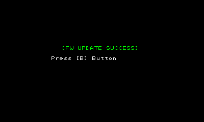
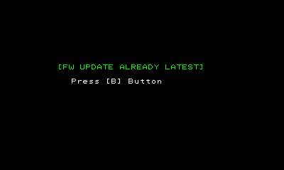
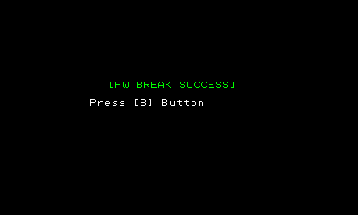

FangateFwUpdater is a tool for updating or destroying NFC reader/writer firmware.
This tool cannot be used with SNAKE development devices or SNAKE development tools.
It operates only with CTR development devices and CTR development tools.
The NFC reader/writer firmware cannot be updated when the battery level is low.
When the battery level is low, the NFC reader/writer LED illuminates in red. Replace the battery when that happens.
If you press the A Button after starting FangateFwUpdater, it initiates communication with NFC reader/writer and updates the firmware.
Position the NFC reader/writer so that it faces the CTR's infrared receiver before pressing the A Button.
If the firmware update starts successfully, the screen shown in the figure below appears on the upper screen.
It takes about 30 seconds for the process to finish. When the firmware update succeeds, the screen shown in the figure below appears on the upper screen.

If the latest NFC reader/writer firmware is already installed, the following screen appears on the upper screen.

The NFC reader/writer firmware update process cannot run if the latest version of the firmware is already installed.
The firmware update process can be run if the NFC reader/writer firmware is destroyed, however, so use this feature if you want to force the firmware update process to run.
If you press the B Button after starting FangateFwUpdater, it initiates communication with NFC reader/writer and destroys the firmware.
Position the NFC reader/writer so that it faces the CTR's infrared receiver before pressing the A Button.
If the firmware is successfully destroyed, the screen shown in the figure below appears on the upper screen.

CONFIDENTIAL